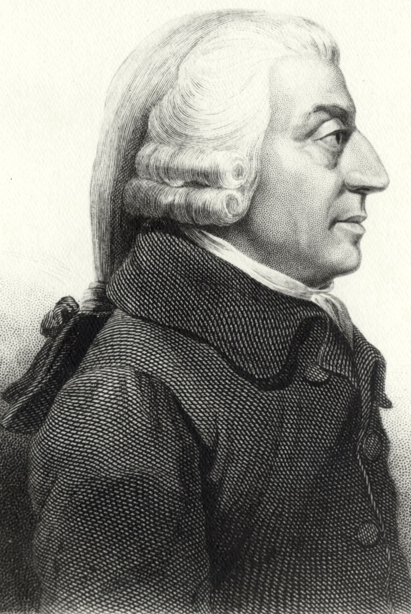

|
Adam Smith (1723-1790) è stato un filosofo e economista scozzese, considerato uno dei padri fondatori dell'economia moderna.
Adam Smith nacque il 5 giugno 1723 a Kirkcaldy, in Scozia. Studiò filosofia e scienze sociali presso l'Università di Glasgow e l'Università di Oxford, prima di intraprendere una carriera accademica come professore di logica e poi di filosofia morale all'Università di Glasgow.
La sua opera più celebre è "An Inquiry into the Nature and Causes of the Wealth of Nations" (Indagine sulla natura e le cause della ricchezza delle nazioni), pubblicata nel 1776. In questo libro, Smith sviluppa molte delle idee fondamentali dell'economia classica, comprese le teorie sul libero mercato, la divisione del lavoro, il valore del lavoro e l'importanza dell'autoregolamentazione economica.
Smith è famoso per aver introdotto il concetto della "mano invisibile" nel contesto del mercato libero. Sostenne che, quando gli individui perseguono il proprio interesse egoistico nel mercato, saranno guidati "dalla mano invisibile" a promuovere l'interesse della società nel suo complesso, poiché la concorrenza porta a prezzi più bassi, maggiore efficienza e innovazione.
riconobbe l'importanza della divisione del lavoro nel migliorare l'efficienza e la produttività. Illustrò questo concetto con l'esempio dei pin-maker, mostrando come la specializzazione e la suddivisione delle mansioni possono portare a una maggiore produzione e prosperità economica.
ha contribuito anche a molte altre aree della teoria economica, tra cui la teoria del valore del lavoro, la teoria della moneta, la teoria del commercio internazionale e la teoria della rendita fondiaria.
Le sue idee hanno avuto un impatto duraturo sull'economia e sulla teoria politica. Il concetto di libero mercato e la fiducia nel potere dell'autoregolamentazione economica sono diventati pilastri dell'economia capitalista. La sua opera ha influenzato generazioni di economisti e politici, e molte delle sue idee continuano a essere dibattute e studiate ancora oggi.

|
|